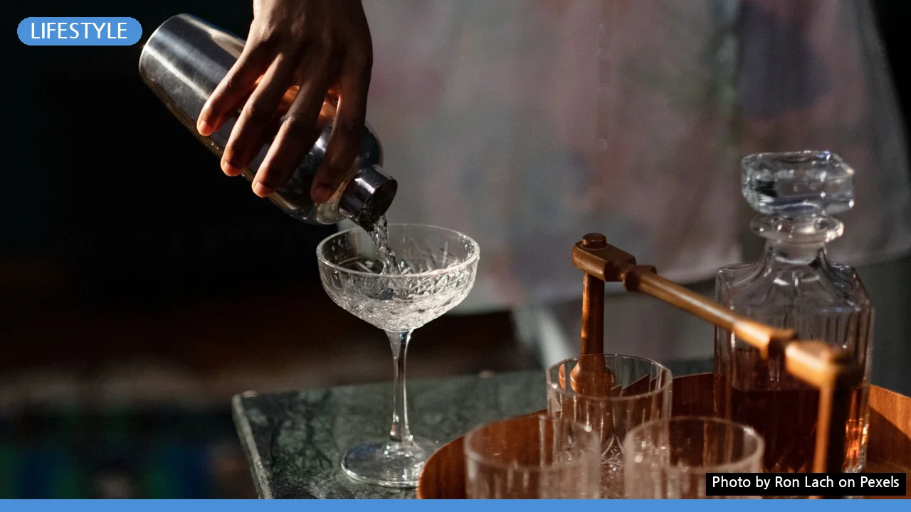

홈텐딩, 어렵다고요? 초보자를 위한 최소 준비물부터 시작 가이드
사진: Ron Lach / Pexels (무료 이미지, 출처 표기)
홈텐딩, 왜 지금 시작해야 할까요?
집에서 나만의 칵테일을 만드는 홈텐딩(Hometending)은 단순한 취미를 넘어 새로운 라이프스타일로 자리 잡고 있습니다. 밖에서 즐기던 칵테일을 집에서 편안하게 만들면서 비용 절감은 물론, 손님 접대 시 특별한 경험을 선사할 수 있습니다. 2026년 9월 기준, 주류 문화가 다양해지면서 홈텐딩에 대한 관심은 꾸준히 증가하고 있습니다.
새로운 취미를 통해 일상의 활력을 찾고 싶다면, 홈텐딩은 좋은 시작점이 될 수 있습니다. 복잡해 보이는 과정도 막상 시작하면 생각보다 간단하며, 나만의 레시피를 개발하는 즐거움까지 얻을 수 있습니다.
초보자를 위한 홈텐딩 필수 도구와 재료
홈텐딩을 시작하기 위해 고가의 전문 장비를 모두 갖출 필요는 없습니다. 몇 가지 기본적인 도구와 재료만으로도 근사한 칵테일을 만들 수 있습니다. 아래 표에서 초보자가 갖춰야 할 필수 도구를 확인해보세요.
도구 외에 필요한 재료로는 보드카, 진, 럼, 위스키 등 기호에 맞는 기본 주류 2~3가지와 탄산수, 토닉워터, 콜라, 오렌지 주스 같은 음료, 그리고 레몬, 라임, 설탕 시럽 등이 있습니다. 이 정도만으로도 수십 가지 칵테일을 만들 수 있습니다.
첫 칵테일, 어떤 레시피부터 도전할까?
처음부터 복잡한 레시피에 도전하기보다는 간단한 투샷 칵테일부터 시작하여 성공 경험을 쌓는 것이 중요합니다. 다음은 초보자도 쉽게 만들 수 있는 몇 가지 칵테일입니다.
- 하이볼: 위스키 1샷(30ml)에 탄산수 120~150ml를 채우고, 레몬 슬라이스로 가니시합니다.
- 진토닉: 진 1샷(30ml)에 토닉워터 120~150ml를 채우고, 라임 웨지로 가니시합니다.
- 스크루드라이버: 보드카 1샷(30ml)에 오렌지 주스 120~150ml를 섞습니다.
- 럼콕: 럼 1샷(30ml)에 콜라 120~150ml를 섞고, 라임 웨지로 가니시합니다.
얼음을 가득 채운 잔에 차가운 재료를 순서대로 넣고 가볍게 저어주면 됩니다. 이 기본 레시피들을 통해 자신감을 얻고 점차 다양한 칵테일에 도전해 보세요.
홈텐딩 재료 똑똑하게 고르는 팁
성공적인 홈텐딩을 위해서는 재료 선택도 중요합니다. 처음부터 모든 종류의 술을 구매하기보다는 자신이 즐겨 마시거나 대중적으로 인기 있는 주류부터 시작하는 것이 좋습니다.
고가의 프리미엄 주류보다는 중저가 제품으로 시작하여 다양한 조합을 시도해보고, 점차 취향에 맞는 주류로 확장하는 것을 권장합니다. 시럽은 직접 만들면 재료 본연의 맛을 살릴 수 있지만, 시판되는 다양한 맛의 시럽을 활용하는 것도 편리한 방법입니다.
신선한 과일과 허브는 칵테일의 풍미를 결정하는 중요한 요소이므로, 사용할 때마다 소량씩 구매하여 신선도를 유지하는 것이 좋습니다.
더 맛있는 칵테일을 위한 홈텐딩 노하우
기본 레시피를 넘어 더 맛있는 칵테일을 만들고 싶다면 몇 가지 노하우를 알아두면 좋습니다.
얼음의 중요성: 칵테일은 얼음이 녹으면서 희석되는 정도에 따라 맛이 달라집니다. 쉽게 녹지 않는 단단하고 투명한 얼음을 사용하면 칵테일 본연의 맛을 오래 즐길 수 있습니다. 잔에 얼음을 가득 채워 음료의 온도를 빠르게 낮추는 것도 핵심입니다.
적절한 온도 유지: 칵테일 잔을 미리 냉장고나 냉동실에 넣어 차갑게 해두면, 칵테일이 서빙된 후에도 차가운 온도를 오래 유지할 수 있어 더욱 신선하게 즐길 수 있습니다.
가니시 활용: 칵테일에 올라가는 가니시(장식)는 시각적인 아름다움뿐만 아니라 향과 맛을 더해줍니다. 레몬이나 라임, 오렌지 등의 과일 슬라이스, 허브 잎(민트 등)을 활용해 칵테일의 매력을 더해보세요.
홈텐딩 시 주의할 점 및 안전 가이드
홈텐딩은 즐거운 취미이지만, 몇 가지 주의할 점을 숙지하여 안전하게 즐겨야 합니다.
- 음주량 조절: 집에서 편하게 마시다 보면 과음하기 쉽습니다. 적정 음주량을 지켜 건강하게 즐기는 것이 중요합니다.
- 알레르기 유발 성분 확인: 사용하는 재료 중 특정 성분에 알레르기가 있다면 미리 확인하고 피해야 합니다.
- 기구 세척 및 위생 관리: 칵테일 도구는 사용 후 깨끗하게 세척하고 건조하여 위생적으로 관리합니다.
- 미성년자 음주 절대 금지: 주류는 미성년자의 접근이 불가능한 곳에 보관하고, 절대 미성년자에게 제공해서는 안 됩니다.
- 주류 보관: 직사광선을 피하고 서늘한 곳에 보관하여 변질을 막습니다. 개봉한 주류는 공기와의 접촉을 최소화하여 보관해야 합니다.
이 가이드를 통해 홈텐딩의 매력을 안전하게 발견하고, 집에서 나만의 특별한 바를 만들어보세요. 더 많은 정보는 관련 서적이나 온라인 커뮤니티를 통해 얻을 수 있습니다.
🔗 이 글도 함께 보면 좋아요: 집에서 이화주 만들기, 초보도 성공하는 키트 활용법
관련 추천 상품
이 포스팅은 쿠팡 파트너스 활동의 일환으로, 이에 따른 일정액의 수수료를 제공받습니다.